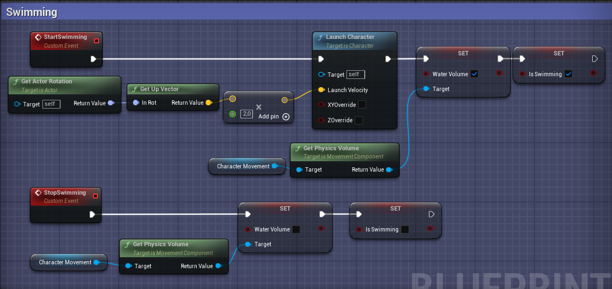
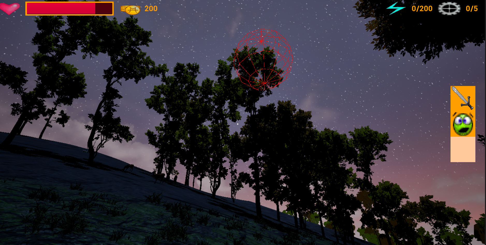

Denník
Stav práce ku dňu 21.2.2025
Úplne na začiatku, keď sme sa ešte v rámci predmetu Ročníkový projekt a úvod do bakalárskej práce mali stretnúť so
školiteľmi a dohodnúť sa s nimi na zadaní bakalárskej práce, znel názov mojej práce Počítačová hra s veľkým počtom
interagujúcich NPC. Na začiatku tretieho ročníka sme však od tejto témy upustili, keďže sa môjmu školiteľovi nezdala
úplne premyslená. Bolo teda treba vymyslieť niečo nové. Pojem "jazdec", neskôr "skokan" až nakoniec anglické slovo
"hopper" na označenie človeka alebo bytosti schopnej cestovať (skákať) medzi svetmi som si vymyslela možno už v škôlke.
Neviem presne, miestami mám pocit, že ku mne patril odjakživa. Preto ako náhle som zavetrila príležitosť použiť ho znovu,
okamžite som po nej skočila. Mala som predstavu tohto strateného hoppera, ktorý sa ocitol úplne sám na v jednom neznámom
svete na ostrove uprostred ničoho. Má zo sebou len svoj zápisník a rozbitý prístroj, ktorý potrebuje opraviť, aby
mohol preskočiť späť do svojho sveta. V pôvodnom pláne bolo len veľké množstvo zvierat, ktorým sa bude treba vyhýbať
a žiadne iné ľuské postavy. Hráč nemal mať k dispozícii nijakú zbraň, len možnosť obetovať časť svojej zozbieranej
energie, aby niektorého tvora dočasne paralyzoval.
Po rozhovore so školiteľom sme sa dohodli prácu zamerať práve na rôznorodé správanie NPC v hernom svete. A tak som
začala presnejšie formulovať špecifikáciu svojej hry.Ukázalo sa, že niektoré z pôvodných myšlienok sú dosť obmedzujúce.
Preto nakoniec pribudla dednina s niekoľkými obyvateľmi, s ktorými by hráč mohol obchodovať a plniť pre nich rôzne
úlohy. Takisto som sa rozhodla dať hráčovi meč, keďže mi to otvorilo niekoľko nových spôsobov interakcie hráča s tvormy
na ostrove. Keďže som vedela, že sa musím spoliehať na modely a animácie, ktoré sa mi podarí nájsť na internete strávila
som nejaký čas hladaním a zisťovaním, aké rôzne zvieratá a príšery sa mi podarí zohnať. Nakoniec som dala dokopy asi 20
modelov s dostatočným počtom animácií. Väčšina z nich pochádza z Fab.com a ľuské modely a animácie mám z Mixama. Keď už
som vedela aké zvery a beštie viem použiť, navrhla som si a poznačila 20 rôznych druhov chovania a konečne sa odhodlala
začať niečo programovať.
Ako prvé som si zobrala za úlohu spraviť základné ovládanie hráča. Nič zložité. Potom sa vynorila nasledujúca otázka.
Aká veľká má byť herná mapa? Odpoveď: nejasná. Rozhodli sme sa vychádzať z času potrebného na prejdenie s jednej strany
mapy na druhú. Vtedy som sa rozhodla vyskúšať rozmery 10 000 x 10 000 (asi metrov, myslím, že Unreal Engine používa
metre). Konečné slovo mal nakoniec môj počítač, ktorý sa jednoznačne vyjadril, že viac ako 3 000 x 3 000 nedá. A tak som
sa na tomto obmedzenom priestore pustila do budovania môjho vysnívaného ostrova. Rozdelila som ho na 4 pomyselné oblasti.
Pláž, lúka, les a hory. V ideálnom prípade sa mi možno podarí nadstaviť navigáciu tak, aby tvory ostávali vo svojich
zónach, ale zatiaľ rozdelenie ostáva len kozmetické. Potom som sa rozhodla rozpohybovať Slnko a postarať sa o krásnu
zmenu farby oblohy v závyslosti od časti dňa. Na oblohu som použila čosi, čo sa v Unreal Engine volá SkySphere.Je to
sféra, do ktorej sa vloží celá herná mapa a na jej vnútornej strane sa vykresluje obloha s mrakmi a hviezdami. Potom
sa jej dá referencia na Directional Light, druh svetla, ktorý slúži ako Slnko a potom sa obloha vykreslená na tejto
sfére aktualizuje podľa uhla otočenia vybraného Directional Light. Ďaľší problém, ktorému som čelila bolo otáčanie Slnka
okolo zeme. Z nejakého dvôvodu sa totiž vždy o polnoci zaseklo. Problém sa ukázal byť s spôsobe, v ktorom Unreal Engine
spočítava úhly. Takže ak Slnko dosihlo otočenie presne 90 stupňov, vypočítaný uhol, o ktorý sa malo otočiť v ďaľšej
iterácii bol vždy 0. Na koniec sme spolu zo školiteľom nevymysleli nič múdrejšie než kontrolovať, či Slnko náhodou
nedosiahlo otočenie 90 stupňov a v tom prípade ho ešte na silu pootočili o kúsok ďalej.
Teraz, som sa rozhodla, že je najvyšší čas, vyskúšať si vytvoriť nejaké zviera. Ako pokusného králika som si zvolila
ľaň, keďže je jedna z jednoduchších tvorov, ktorých som vymyslela. Odladiť jej správanie a zabezpečiť správne prehrávanie
animácií mi trvalo asi týždeň. Najväčším kameňom úrazu bolo moje nesprávne pochopenie rozhodovacích stromov, ktoré
zabezpečujú ovládanie NPC postáv. Špecificky vrcholov Select a Sequence. Sequence je vrchol, ktorý vykoná všetky príkazy,
ktoré má pod sebou v poradí z ľava do prava. To čo som si ale neuvedomila je, že ak nietorý s týchto príkazov zlyhá,
vykonávanie rozhodovacieho stromu sa vráti späť na začiatok bez toho, aby dokončil vykonávanie nasledujúcich príkazov.
Select zase vykoná len jeden príkaz z tých, ktoré ma pod sebou. Prvý, ktorý mu víde ako úspešný. Preto je zásadné
správne určiť priority a ako prvé dať príkazy, ktoré ak sa dajú vykonať, majú mať prednosť pred ostatnými. A potom je
tu ešte jedna zásadná chyba, ktorú stále opakujem a potom sa divým, prečo mi vykonávanie stromu nefunguje. Pri vytváraní
vlastných úloh je dôležité nezabudnúť ich ukončiť príkazom Finish Execute s parametrom Success nastaveným na
true. Inak strom nebude vedieť, že tento príkaz už skončil s úspechom a zasekne sa v čakaní na jeho skončenie.
Keď sa ľaň konečne naučila správať slušne, začala som stavať dedinu a do nej som vytvorila niekoľko obyvateľov. Ešte tam
nie sú všetci, ale obchodovanie a tvorba elixírov už funguje. Tu rovnako ako aj pri tvorbe inventára a rôznych menu okien
som postupovala podľa rôznych tutoriálov alebo som uplatniľa zručnosti, ktoré som získala na predmete Game engines (1) a
preto ich nebudem rozoberať do podrobna. Spomeniem len jednu zásadnú chybu, ktorú som urobila pri tvorbe dialógového
okna, ktorá ma stála dve hodiny debugovania. Nikdy neoznačte funkciu, ktorá robí niečo iné ako vracia hodnotu
bez toho, aby ju akokoľvek zmenila ako pure. Bude to stvárať zverstvá. Unreal Engine si totiž tieto pure
funkcie volá vždy vtedy, keď ich potrebuje, čo môže byť častejšie, ako by ste si priali. Mne to konkrétne spôsobilo to,
že premená, ktorá určovala, ktorý kus dialógu sa má zobraziť, sa zväčšila vždy dva krát a tak sa objavoval vždy iba každá
druhá časť textu.
K súčasnému dátumu som ešte dokončila útok hráča mečom na zvieratá. Jeleňa, ktorého sa mi podarilo odladiť celkom
rýchlo, keďže veľkú časť svojho správania zdedil od ľane. Poriešila som smrť hráča, pravidelné spawnovanie rastlín,
ukladanie hry (všetko okrem zvierat) a hádzanie návnad. Tieto návnady boli boj sám o sebe. Najprv som sa hádzanie
pokúšala robiť pomocou Projectile Movement Component. Je to kompnent, ktorý simuluje let projektilu. Objekt(actor),
ktorý má tento komponent by mal po vytvorní automaticky vyletieť (hodiť sa) podľa zadaných parametrov. Toto riešenie
mi však nefungovalo. Po dlhom pátraní som prišla na to, že ak chcem, aby tento komponet fungoval správne, nemôže mať
actor, ktorému patrí zapnuté simulovanie fyziky, lebo to má pred týmto komponetom prednosť a teda sa efekt komponetu
úplne preskočí. Druhé riešenie, ktoré som našla bolo pomocou funkcie Set Physics Linear Velocity, ktorá prídá smer a
rýchlosť zvolenému komponetu. V mojom prípade statickému meshu hodenej návnady. Toto riešenie už fungovalo, ale zase
tu bol háčik. Hodil sa iba mesh a jeho podkomponety, ale koreň actora a teda aj jeho pozícia ostala nezmenená. To
spôsobilo, že nalákané zvieratá chodili na miesto, kde hráč návnadu vyhodil a nie tam kde dopadla. Najprv som sa
problém pokúsila riešiť časovačom, ktorý pravidelne prispôsoboval pozíciu koreňového komponetu podľa pozície meshu.
Toto riešenie je však na prvý pohľad neefektívne a tak som sa musela zastaviť a prerobiť všetky zbierateľné itemy tak,
aby ich mesh bol koreňovým komponetom. Prečo som to tak rovno nespravila hneď na začiatku?
V sučasnosti je cieľom povytvárať, čo najviac zvierat a zabezpečiť ich objavovanie sa vo svete. Realisticky si uvedomujem,
že asi nestihnem všetky, ktoré som vymyslela aj implementovať, ale budem sa snažiť dosiahnuť, čo najväčšiu pestrosť.
24.2.2025
Ako úlohu od posledného zápisu som si dala vlky. Chovanie vlkov v mojej hre je zhruba nasledovné: je
jeden alfa a niekoľko normálnych vlkov. Alfa rozhoduje, či je svorka v pokoji, na love, alebo či naháňa určitý cieľ.
Ostatné vlky hlásia alfovi všetko, čo videli alebo počuli a on potom na to nejak zareaguje. "Nič zložíté", povedala som
si. "To dám za dva dni." Zle! V súvislosti s vlkmi sa vyskytli dva hlavné problémy. Po prvé to boli kolízie. Nadstavila
som kolízny box a očakávala som, že to bude stačiť na to, aby vlky chodili okolo seba. Veľmi rýchlo som však zistila,
že vlky majú tendenciu sa zaseknúť jeden v druhom, čo nie len že nevyzerá pekne, ale spôsobí aj to, že sa zaseknú a
nevedia sa ďalej hýbať. Prišla som na to, že tento problém vzniká s najväčšou pravdepodobnosťou preto, lebo vstavaná
funkcia, ktorá vracia náhodné súradnice, na ktoré sa vie postava pohnúť, brala do úvahy len statické prekážky a nie
ostatných vlkov, čo spôsobovalo, zrážky. Najprv som sa problém snažila riešiť tak, že som vlkov označila ako dynamické
prekážky, čo do istej miery pomohlo, ale zrážky sa stále opakovali. Po ďalšom pátraní som našla v dokumentácii jednu
vlastnosť Character Movement Component-tu, ktorý všetky tvory v mojej hre ovládané počítačom používajú
na zabezpečenie pohybu. Táto vlastnosť sa nazýva Avoidance a je presne to čo som potrebovala. Keď
sa zapne, tak pomocou niekoľkých parametrov sa dá nadstaviť vzdialenosť, na ktorú sa majú postavy obchádzať aj silu,
ktorou sa majú od seba "odstrčiť". Bohužila avoidance berie do úvahy len koreňový komponet, ktorý je v mojom prípade
kolízna kapsula, ktorú som musela zväčšiť tak, aby obalila celého vlka. Tým som stratila presnosť, takže vlk blokuje
ovela viac priestoru ako vizuálne zaberá. Zato sa mi, ale podarilo zbaviť zrážok medzi vlkmi a aj náhodný pohyb vlkov
vyzerá o čosi prirodzenejšie.
Druhý problém nebol ani tak problém ako hlúpa chyba. Takže alfa robí všetky rozhodnutia za svorku. Čo ale, keď alfa
je zabitý? Napísala som jednoduchú funkciu, ktorú má alfa zavolať vždy pred svojou smrťou. Zo živých vlkov v svorke
vyberie náhodne jedného a toho označí ako nového alfu. Zároveň mu pošle ešte niake ďalšie hodnoty, ktoré bude nový alfa
potrebovať na to, aby svorka bez problémov pokračovala v tom, čo práve robí a na záver oznámi ostatným vlkom, že sa alfa
zmenil. Túto funkciu som napísala spustila som hru, a po smrti alfi editor vypísal kopu chýb, že sa vlci snažili
volať funkcie na null hodnote. Krása! Najprv mi napadlo, že sa asi funkcia nevykoná pred tým ako je pôvodný alfa zničený.
Táto teória však bola vyvrátená pomocnými výpismi. Navyše sa zdalo, že nový alfa sa nadstavý, ale svorka sa ho proste
rozhodne nerešpektovať. Až včera večer, keď som funkciu na voľbu nového alfu čítala snáď po stý krát mi napadlo: ALE
TÁ RANDOM FUNKCIA PREDSA VRACIA VŽDY INÚ NÁHODNÚ HODNOTU. Takže, ja som si vypýtala náhodného vlka zo svorky, ale
nikam som si ho neuložila, ale zakaždým som si pýtala jeho hodnotu od funkcie random. Pomoc. Na jednej strane, pri
tom ako moja funkcia vyzerá zapísaná pomocou Blueprintov (vizuálneho skriptovacieho jazyka, ktorý používa unreal engin)
chápem prečo som si to nevšimla skôr, ale aj tak ma šlo poraziť, keď som si to všimla.
Potom to bolo už iba o doladení posledných detailov a kapitolu vlky pokladám za uzavretú.
3.3.2025
Od posledného zápisu som sa stretla zo školiteľom, kde sme sa porozprávali o mojom postupe na práci. Rozhodli sme sa, že
teraz je najdôležitejšie pokračovať v implementácii tvorov. Takisto sa nesmie zabudnúť ošetriť, aby hráč nemohol vypadnúť
z hernej mapy a pridať intro a koniec hry. Na označovanie toho, aké vzťahy sú medzi tvormi (a aj hráčom) som doteraz
používala tagy. Toto riešenie je funkčné, ale školiteľ ma upozornil, že je náchylné na preklepy. Ak sa
niekde dopustím preklepu v mene tagu nebude to správne fungovať a chyba sa bude ťažko hľadať. Doporučil mi, aby som
radšej použila intrefaci, ktoré nebudú obsahovať žiadne funkcie na označenie tvorov a nehladala
tvory podľa tagu, ale podľa toho, či implementujú daný interface. Tento návrh som zaiplementovala a tagy som z projektu
odstránila.
Potom som pracovala na novom tvorovi - Vlkolak. Pri implementovaní vlkolaka som sa snažila, čo najviac
funkcií spúšťať priamo cez rozhodovací strom. Totiž, pri programovaní vlkov som veľa úloh v rozhodovacom strome iba
zavolala a potom som nechala samotného aktora BP_wolf, aby ich vykonal. To spôsobovalo, že som musela rôznymi obklukami
(napr. nadstavovaním rýchlosti pohybu na 0) zabrániť, aby sa počas prehrávania animácie zavýjania vlk začal posúvať.
Pri vlkolakovi som sa tomuto chcela vyhnúť tak, že prehrávanie animácií som sa rozhodla volať priamo v strome pomocou
preddefinovanej úlohy Play Animation. Tá zabezpečila, že sa nezačala žiadna ďalšia úloha skôr ako sa
animácia neprehrala celá. To najprv vyzeralo, ako elegantné riešenie môjho problému, o ktorom som si myslela, že použijem
aj na všetkých ďaľších tvorov. Ako som však postupovala, ukázalo sa, že toto riešenie tiež nefunguje úplne dokonale.
Mala som animáciu revu, ktorá mala v sebe notifikáciu, aby Animačný blueprint v správnom čase prehral zvuk a zavolal
funkciu efektu spojeného s touto animáciou - všetky tvory (a hráč) v dosahu sa na päť sekúnd nebudú môcť hýbať.
Ukázalo sa však, že keď animáciu spúšťam cez úlohu Play Animátion, tak sa notifikácia neodpáli. Preto som vytvorila
vlastnú úlohu, ktorá vezme SkeletalMesh vlkolaka a zavolá na ňom funkciu Play Montage, ktorú som
doteraz používala na prehrávanie animácii. Keď animácia skončí, úloha skončí úspechom. Ak bude animácia prerušená (napr.
inou animáciou, ktorá sa prehrá ak bol tvor poranený), tak úloha tiež skončí, ale neúspechom. Toto riešenie mi dáva tú
istú výhodu, ktorú som sa snažila získať pomocou úlohy Play Animation a teda, že strom nepokračuje vo vykonávaní, kým
animácia neskončí a zároveň môžem používať notifikácie v animáciách. Takisto to vyriešilo problém, ktorý Play Animation
pre mňa neriešilo úplne dobre a to, ak animácia bola prerušená. Keď sa to stalo, vlkolak šiel na chvíľu do defaultnej
T-pózy pred tým, ako sa vrátil do idle státia. Toto tiež spôsobovalo nesprávne prehrávanie animácie úmrtia. Vytvorenie
vlastnej úlohy, pre mňa vyriešilo všetky tieto problémy a teda budem tento postup používať aj v na ďaľšie tvory. Ešte by
bolo dobré vyskúšať nejako sparametrizovať prehrávanú animáciu, aby som kvôli každej animácii nemusela vytvárať novú
úlohu.
9.3.2025
Na tento týždeň som si zvolila pracovať na havranovi. Teoreticky samotné správanie havrana nie je až také zložité.
Prechádza sa, keď sa zlakne, tak utečie a existujú veci, po ktorých útočí on. Od ostatných tvorov sa líši tým,
že reaguje na dva rôzne druhy návnad. To, že mám aj takýchto tvorov som si pri vytváraní základbej triedy neuvedomila
a tak som musela trošičku upraviť niektoré funkcie, tak, že pokiaľ má tvor zvolený ako druh návandy BP_BaseBait, teda
základnú návnadu, tak bude informovaný o všetkých návnadách v blízkosti a sám si vyberie, na ktoré bude reagovať.
To čo však bolo na havranovi najzaujímavejšie bolo, že lieta. Pri implementácii lietania vzniká jeden trošičku ošemetný
problém. Unreal Engine vyrába navigáciu len na povrchoch, nie v celom 3D priestore. To znamená, že hoci Character
Movement Component má druh pohybu let už predpripravený, v podstate to robí len to, že tvor prestane padať na zem.
Nedajú sa použiť predpripravené funkcie MoveTo a AIMoveTo na to, aby som tvora posunula niekam po vzduchu. Vytvorila som
teda dve úlohy pre rozhodovací strom: FlyTowardsActor a FlyTowardsLocation. Tieto úlohy využívajú funkciu
AddMovementInput, ktorá sa bežne používa na pohybovanie hráčskej postavy a posúva postavu daným smerom.
Smer, ktorým sa chcem posunúť vypočítam ako KamSaChcemDostať - MojaPozícia. Keď havran nasleduje hráča, stačí to, že
hráčova pozícia je niekde zhruba v strede hráčskej postavy, čo sa postará o to, aby havran lietal vo vhodnej výške.
Horšie bolo nájsť pozíciu, kam sa má havran posunúť, keď letí preč. Jeden spôsob, ako hladať toto miesto, ktorý mi
napadol, bolo nejako pomocou line-taring-u, ale keďže moje havrany nelietajú veľmi vysoko (zhruba 100 - 150 jednotiek nad
zemou) napadlo mi predsa len vyskúšať použiť navigáciu. Použijem podobnú funkciu pre nájdenie lokácie na útek, ako
používam pri lani až na to, že súradnice, ktoré takto získam nepoužijem priamo ako cieľ. Namiesto toho si vypýtam náhodný
bod v blízkosti týchto súradnic na navigácii a tento bod posuniem o náhodnú hodnotu z rozsahu 100-150 hore po z-tovej osi.
Tak získam bod nad zemou, ku ktorému má havran letieť. Funguje to celkom pekne. Problém by mohol nastať, ak by som
v leveli mala nejaké levitujúce platformy, do ktorých by mohol vraziť, lebo na zemi by miesto voľné bolo a vo vzduch nie.
Takýchto miest však v leveli nie je veľa (možno jedine ak v dedine) a pomedzi stromi lieta pekne a aj smerom do kopca si
vie udržať dobrú výšku nad zemou.
Okrem toho som ešte opravila jeden bug, ktorý som objavila. A síce, že sa tvor môže zaseknúť za prepokladu, že ho
niečo viac krát po sebe dosť rýchlo udrie. Takisto som pridala pomalé doliečovanie tvorov, na ktorých nejaký čas nič
neútočí a podobnú funkciu pre hráča, ktorá ho v prípade veľmi mála životov dolieči na jednu tretinu maximálneho počtu.
17.3.2025
Tento týždeň bol dosť chaotický. Trochu odvážne som si povedala, že by bolo dobré pokúsiť sa zvýšiť tempo. Dala som
si preto dve úlohy na týždeň. Vytvoriť tvora Barghest (vlkovitá príšera) a sfunkčniť navigáciu pre celý ostrov.
Takisto som chcela ešte opraviť drobné chyby v havranovi.
Spomínané chyby v havranovi, ktoré som opravovala:
- Havrany sa vystrašia navzájom - pridanie kontroli, aby havrany neodlietali po tom, čo sa k nim priblíži iný havran
- Zničenie nesprávnej návnady - niekedy, keď boli dve návnady blízko seba sa stávalo, že havran prišiel k jednej návnade, ale kým pri nej stál, zmenila sa mu v premenej Bait referncia na návnadu, ktorú má zjesť a tak bola zničená nesprávna návnada
- Nespawnovanie peria po zjedení návnady - Podľa rozhodovacieho stromu mal havran zjesť návnadu a potom s pravdepodobnosťou 4/10 mal vytvoriť pierko. Keďže však rozhodovací strom kontroluje či je návnada nadstavená a ak sa pravdivosť tejto podmienky zmení vráti vykonávanie späť do vrcholu stromu, v momente, keď havran zjedol návnadu podmienka prestala platiť. Rozhodovací strom sa zresetoval a ku spawnovaniu pierka nikdy nedošlo. Problém som vyriešila tým, že som vytváranie pierka dala ešte pred zjedenie návnady.
Trochu som sa hrala s nastavením priesvitnosti materiálu na Barghestovi, keďže sa má vedieť zneviditeľniť, ale potom
som sa rozhodla, že radšej najskôr skúsim nadstaviť navigáciu a Barghestovi sa budem venovať potom. Ako sa však ukázalo,
tvorba navigácie bola viac časovo náročná ako som si myslela. V hernej mape bolo treba vyznačiť jednotlivé oblasti -
dedina, lúka, les, pláž, hory, oceán. Vytvorenie všetkých NavModifierVolume-ov, ktoré slúžia na odlíšenie týchto oblastí
mi trvalo dva dni pričom mi UE znepríjemňoval život všemožnými spôsobmi. Ako som zistila, ak spravím jeden
NavModifierVolume príliš veľký, navigácia ho bude ignorovať. Prečo? Len Pán Boh vie. Musela som preto vytvárať niekoľko
menších volumov pričom neraz sa mi stalo, že je volume, ktorý som vyznačovala 15 minút sa ukázal byť ešte stále príliš
veľký. Ďaľší problém bol bug v editore, ktorý spôsobuje, že vlastné NavArea triedy, ktoré nie sú defaultne v editore
sa nevyhodnocujú správne. NavArea v podstate určuje, aký druh oblasti NavModifierVolume označuje. Či je to prekážka,
priechodná oblasť, zakázaná oblasť alebo v mojom prípade dedina, les, lúka, atď. Bug robí to, že po vytvorení novej
NavArea triedy, aj keď ju priradíte nejakému NavModifierVolume-u, navigácia ju odignoruje a bude sa tváriť, že je to
obyčajná priechodná zóna. Aby sa oblať správne vyhodnotila, je treba zmeniť číselnú hodnotu NavArei, ktorá určuje aká je
cena za prejdenie cez túto zónu a nechať nanovo vybuildovať navigáciu. Potom to už bude našťastie fungovať a číselnú
hodnotu triedy môžme kludne prepísať späť a čokoľvek, čo potrebujeme. Keď už boli jednotlivé zóny vytvorené, ostalo
len vytvoriť NavQueryFiltre, ktoré povedia každému tvorovi, do ktorej oblasti môže chodiť, ktorým sa má podľa možnosti
vyhnúť a ktoré sú úplne zakázané. To ako sa dá oblasť úplne zakázať som zistila len nedávno a ešte musím filtre
upraviť tak, aby tvori vôbec neliezli do vody, ale inak to už celkom funguje. Samozrejme, dali by sa robiť ešte úpravy.
Momentálne ak nejaký tvor pred niečím utéká alebo niečo naháňa, môže odísť aj z oblasti, v ktorej sa má nachádzať. To je
síce v poriadku, ale nič mu nekáže, aby sa po tom, čo prejde späť do idle stavu snažil vrátiť do svoje určnej oblasti.
Na teraz si túto funkcionalitu však asi nechám na dorobenie neskôr.
A teraz najväčší problém týždňa. GitHub. GitHub dovolí nahrať len súbory, ktoré sú menšie ako 100MiB. A po nastavení
všetkých NavModifierVolume-ov moja herná mapa toto prekročila. Teda ak by som zmeny commitla už by mi ich GitHub nedovolí
pushnúť. Jej... -_- Takže, ako GitHub sám radil, nainštalovala som a rozchodila Git Large File Storage (Git LFS). Zdalo
sa, že je problém vyriešený a môžem ďalej v kľude robiť. Potom však prišiel mail z GitHubu, že som prekročila nejaké
limity pamäte pre Git LFS a že si mám dokúpiť ďaľšie. No, pekne. A čo teraz? Vidím asi tri možnosti. Prvá, povedať si
no dobre a tých 3,4 mesiace do konca akademického roka mu platiť za tú dodatočnú pamäť. Nie je to až taká katastrofa. A
potom nejako zmazať ten repozitár, aby už viac nepýtal. Druhá, počkať čo sa stane. Keďže hoci frfle, ďalej pushovať mi
zatiaľ nezakázal. A tretia je vykašlať sa na celý GitHub a robiť si zálohy poslednej funkčnej verzie niekde na kľúč. Ešte
som sa nerozhodla.
No a tak skončil týždeň a k robenie Barghesta som sa vôbec nedostala. Takže sa z neho stáva úloha na nasledujúce dni.
Hneď po tom ako sa teda rozhodnem, čo s tým Gitom.
24.3.2025
Len na úvod, rýchlo riešenie problému s GitHubom. Na GitHub zmeny už ďalej nepušujem. Commitujem do svojho lokálneho
repozitára a zálohu si s času na čas ukladám na externý disk.
Takže plánom na tento týždeň bol Barghest. Včera som ho síce vyhlásila za hotového, ale teraz ako som ho písala do
beštiaru som si spomenula, že som mu zabudla spraviť reakciu na návnadu a celú tú vec s vlkolakmi. Ah, tá moja hlava
deravá! Ale zo zvyšok je už teda hotový. Prvá vec s Barghestom, ktorú som riešila bola, že som k nemu mala toho vlastne
dosť málo vymysleného. Vedela som, že sa má zneviditeľnovať a to bolo asi tak všetko. Teda potrebovala som mu vymyslieť
nejakú zaujímavú útočnú stratégiu. (Alebo teda aspoň zaujímavejšiu, než to, že sa po hráčovi proste vrhne). Nakoniec som
vymyslela toto: Bude okolo hráča (alebo čohokoľvek na čo útočí) krúžiť a hráč musí sledovať kedy zaútočí. Funkciu na
získanie ďaľšieho bodu na kružnici so stredom na pozícii barghestovho cieľu sa mi podarilo napísať rýchlejšie ako som
čakala. Potom bolo už len treba vymyslieť, kedy sa má táto funkcia volať a o koľko sa má uhol otočenia zväčšovať medzi
jednotlivými volaniami. Najprv som uvažovalo o tom, že funkciu zavolám cez rozhodovací strom, vždy pred tým, ako sa
má barghest pohnúť. S týmto bol problém, že sa barghest posúval buď príliš pomaly alebo až veľmi kostrbato v závislosti
od veľkosti uhlu otočenia. Ako druhý pokus som sa rozhodla funkciu volať v event Tick pričom sa uhol otočenia zväčšuje
o jedna a zároveň aj posunúť barghesta na túto novú pozíciu. To spravilo takú divotvornú vec, že sa barghest zúrivo točil
na mieste. Napadlo mi, že to asi bude spôsobovať to, že sa posúvanie robí príliš často. Skúsila som volanie týchto
funkcií dať na dve rôzne miesta. Pozícia sa teda aktualizuje každý tik, ale neposunie barghesta, len aktualizuje hodnotu
v blackboarde a posúvanie sa robí v rozhodovacom strome pomocou MoveTo, ktoré má zaznačené Observe Blackboard Value.
Takto sa mi teda podarilo dostať plynulý pohyb na kružnici, pričom barghest prakticky okamžite reaguje na pohyb svojej
koristi. Drobná chyba krási tejto metódy sa ukázala v tom, že pri tomto spôsobe vlastne MoveTo nikdy neskončí, keďže
cieľová lokácia sa stále mení. MoveTo teda skončí jedine tým, že je prerušené kvôli zresetovaniu stromu vďaka nejakej
podmienke. Na toto som prišla, keď som sa snažila barghesta presvedšiť, aby z času na čas prestal krúžiť a na korisť aj
zaútočil. Chcela som, aby sa v rozhodovacom strome určovalo, či sa barghest posunie na novú pozíciu, alebo zaútočí, ale
kvôli nekonečnému MoveTo, ak sa už raz pohol, už len krúžil. Najprv som iba skúsila vypnúť Observe Blackboard Value, čo
vyriešilo problém neútočenia, ale za to som prišla o ten pekný plynulý pohyb. Barghest sa hýbal sekane a často narážal
do svojho cieľa. Preto som sa rozhodla nechať MoveTo bežať do nekonečna a do Blackboardu som pridala bool Attack, ktorá
v prípade, že je nastavená preruší MoveTo a barghest tak dostane šancu zaútočiť. Attack s nejakou šancou 0,3 nastavujem
v tiku pri výpočte novej cieľovej lokácie (EDIT: Attack sa nenadstavuje v ticku, ale vo funkcii, ktorá aktualizuje
stav útoku) a po ukončení útoku ju zase vyčistím.
Rýchlo ešte spomeniem, čo som skúšala do hernej mapy povkladať viac tvorov. Myslím, že som ich tam mohla podávať ešte
viac. Ale inak tento test dopadol celkom dobre. Nespadlo to, nepovyskakovali nijaké chyby a hra takmer vôbec nesekala.
Takže asi dobre. Mapa je dosť veľká na to, aby na seba jednotlivé tvory priveľmi nenarážali, takže si nemyslím, že by
sa mohlo stať, aby sa v nejakom momente všetci navzájom vyvraždili. Keď ich tam bude viac, samozrejme, že nastane viac
vzájomných interakcií, ale aj tak chcem nejako z času na čas povytvárať nových tvorov aj počas behu hry. Tak hádam to
bude vpohode. Zatiaľ mám z toho dobrý pocit.
No a plán na najblížší týždeň. DOROBIŤ TIE VECI, ČO SOM ZABUDLA NA BARGHESTOVI a potom Gryf. Na toho sa fakt teším. Ten
síce zase lieta, z čoho až tak nadšená nie som, ale bude sa dať skrotiť a potom bude behať za hráčom a bojovať s ním.
Tak snáď sa mi to podarí aspoň na polovicu tak, ako si to predstavujem.
31.3.2025
Takže, Barghest je doplnený a potom je tu Gryf. Dopadlo to lepšie ako som čakala. Hlávne body, na ktoré som sa pri gryfovi
zamerala, bolo lietanie a to, že si ho hráč vie skrotiť. Pri lietaní som nadväzovala na to, čo som vytvorila pri havranovi.
V podstate používam tie isté tasky na lietanie buď k nejakému bodu, alebo k nejakému actorovi, ale pridala som nejaké
kontroly vďaka, ktorím let gryfa vyzerá trochu prirodzenejšie. V prvom rade som pridala pravidelnú kontrolu pomocou
sphere trace, či niečo nie je pred gryfom. Ak sa teda stane, že do niečoho nabúra, zistím to a viem na to nejako reagovať.
Väčšinou tým, že si vyberiem novú pozíciu ku ktorej má gryf letieť. Takisto som chcela, aby mohol lietať vyšie nad zemou.
Havran je obmedzený na výšku 100-150 nad zemou, vzhľadom na to, ako si hladá novú pozíciu, ku ktorej má letieť. To je ale
prirodzene pre väčšieho tvora ako je gryf nedostačujúce. Gryf môže lietať až 4000 jednotiek na zemou a keď si vyberá
novú cielovú pozíciu spraví najprv line trace priamo pod seba, čím získa súradnice na zemi pod sebou, od tejto pozície
si nájde novú náhodnú pozíciu na navigačnom meshi a tú zase odsunie o náhodnú hodnotu z rozsahu 1000 až 4000 hore po
z-tovej osi. Posledné zásadné vylepšenie je pristávanie. Havran pristáva tak, že proste spadne. Takže, aby gryf nepadal
z tej 4000 jednotkovej výšky voľným pádom na zem, keď sa rozhodne, že chce pristať, nastaví sí flag. Tak bude vedieť, že pri
najbližšom výbere novej pozície ku ktorej má letieť, už nebude posúvať vybranú pozíciu smerom na hor. Tak priletí plynule
k zemi a prejde späť do kroku. Potom už len treba opraviť rotáciu. Keďže pri lietaní sa tvor vždy otáča tak, aby sa pozeral
kam letí, po doletení na zem z oblohy ostáva rotácia trochu naklonená, takže vždy pri pristátí treba vynulovať rotáciu po
y-ovej osi. Myslím, že od toho prvého pokusu lietania je to značný pokrok, ale ešte stále to nie je úplne dokonalé.
Lietanie a prístávanie síce vyzerá celkom v poriadku, ale prechod medzi chôdzou a lietaním vyzerá trochu vtipne. Hlavne
ak gryf vzlietava príliš strmo nahor. Hodilo by sa tam ešte trochu s tým pohrať, či by sa nejako lepšie nedali spraviť
animácie alebo ho nechať najskôr vyskočiť a až potom prejsť do letu, neviem. Ak vyjde čas, tak sa na to ešte pozriem.
Druhá vec, ktorej som sa venovala bolo krotenie gryfa. V podtate toto samo o sebe nebolo náročné, len jedna funkcia. Ale
v súvislosti s tým tam pribudli nové veci, ktoré bolo treba podopĺňať. Hlavne nejakú komunikáciu medzi hráčom a gryfom a
potom ukladanie. Aby sa skrotený gryf uložil a po opätovnom načítaní hry znovu vytvoril. A samozrejme to, že skrotený gryf
sa chová inak ako neskrotený, čiže je to vpodstate dva v jednom.
Ešte na záver, občas vyskakujú v Output logu chyby o tom, že keď si pýtal blackboard tak dostal None. V Gryfovi som už
teda pridala vždy pred zapisovaním do tabule kontrolu, či je referancia na tabuľu validná, teraz to "len" treba poprerábať
vo všetkých ostatných tvoroch. No a potom by som tento týždeň chcela pridať krokodíla (alebo krakena, ešte som sa nerozhodla,
musím pozrieť, ktorý z nich má lepšie animácie), ktorý bude plávať okolo ostrova. Vrámci toho by som chcela urobiť plávanie
aj hráčovi a asi konečne to ohraničenie sveta, aby mi ten krokodíl nevypadol. Uvídim koľko stihnem. Pomaly dochádza čas, mám
7 tvorov hotových, tak ešte aspoň troch, nech je ich 10.
7.4.2025
Takže, od posledného zápisu som prešla postupne cez všetky tvory a všade pridala kontrolu, či je získaná referencia na tabuľu
validná. Od vtedy som už vyššie spomínanú chybu pri spúšťaní hry nepozorovala. Všimla som si však, že pokiaľ spúšťam hru
z hlavného menu je nejaký problém s hráčom. Asi sa nedobre uloží referencia na hráčšku postavu do premennej. Ešte som sa na
to nestihla bližšie pozrieť, keďže som na to prišla len včera pri pripravovaní prezentácie na Bakalársky seminár.
Ďalej som spravila jednoduché ohraničenie sveta. Len kolízny box, ktorý pri prekrití s hráčom vypíše správu a druhý, ktorý
zabráni hráčovi, aby išiel ďalej. A potom som sa hrala s plávaním. Plávanie pre hráča bolo priamočiare podľa tutoriálu s
YouTube (link je na karte so zdrojmi). Trochu som sa zľakla, keď po tom čo som vytvorila blueprint pre oceán, mi z mapy
zmizla voda. Ale našťastie je to len nejaký drobný bug. Stačilo trochu pohnúť s aktorom, ktorý reprezentuje vodu na to, aby
sa to opäť umúdrilo. Potom to bolo už iba otravné, keď za každým, čo som zmenila niečo v blueprinte, voda zmyzla a musela
som to naprávať. Iný problém s vodou bol, keď som zistila, že nie uplne všade okolo ostrova je voda správne detekovaná.
V niektorých častiach ostrova plávanie fungovalo správne, v iných zase po skočení vody bolo síce počuť šplechnutie
(zvuk, ktorý som pridala pri skočení a vylezení z vody), ale prakticky okamžite sa postava prepla späť do chvôdze. Tieto
miesta sa dali aj viditeľne odlíšiť. Časti, kde voda fungovala správne boli pod vodou pekne modré. V miestach, kde voda
nefungovala sa síce pri pohľade z hora nedalo nič rozoznať no po skočení do vody okolie ostalo rovnaké ako nad hľadinou. Iba
nad sebou sme mohli vidieť hladinu vody. Riešenie tohto zádrhelu som nakoniec našla na fóre. Water plugin, ktorý používam
je stále experimentálny a teda sa stáva, že sa v istých situáciách správa divne. Podľa istého komentáru platí, že čim je
aktor oceánu ďalej od bodu 0,0,0, tým viac problémov vzniká. Súradnicu z mám nadstavenú na 690 a tam ju aj potrebujem, keďže
to ovplyvňuje výšku hladiny a preto som ju nechala tak. Ostatné súradnice, som však vynulovala. Tie mali len nejaké náhodnéň
hodnoty asi od vtedy, čo som tohto aktora dotiahla do levla. Fungovalo to ako kúzlo a pokiaľ viem, už voda funguje správne v
celom leveli.
Hlavnou udalosťou týždňa bol krokodíl. Keďže je možné, že to bol posledný tvor, ktorého stihnem implementovať, chcela som
si ešte vyskúšať spraviť to plávanie. Na moje mierne sklamanie to bolo až príliš podobné lietaniu. Aj tak som však rada, že
som ho spravila. Hlavnou myšlienkov krokodíla je, aby sa hráč príliš nemotal vo vode. Tam nič nie je, tam nemá čo loziť.
Nechcem, aby sa príliš často dostal na kraj mapy. Ohraničenie sveta síce je, ale ideálne by ho hráč nemal vidieť. A práve
preto som uvažovala nad touto veľkou príšerov, ktorá sa nedá zabiť a dáva veľké poškodenie. Svoje plány som nakoniec
zmenila a krokodíl sa zabiť dá, ale má 1000 života a hráč dáva poškodenie 10 a zabije hráča na jedno kusnutie a postupne
sa doliečuje. Dúfam, že jasnejšie to už nemôže byť, že toto nie je to, čo by hráč mal robiť. Krokodíl je v hre len jeden a
preto ešte plánujem zabezpečiť, že ak predsa len bude nejakým spôsobom zabití, vytvorí sa namiesto neho nový. Okrem toho
chcem ešte oskúšať, či nenastáva nejaká nepekná situácia pri niektorých viac nerovných častiach brehu. Či sa tam, krokodíl
niekde nezasekáva a či sa vie vždy dobre dostať k hráčovi.
A tak sa dostávame na koniec môjho týždenného obkecu. Najbližší týždeň plánujem pracovať na dokončovacích prácach. Teda
ešte doladiť niektoré veci na gryfovi a krokodílovi, urobiť intro a koniec hry, pridať aspoň nejaký jednoduchý widget, kde
by bolo vysvetlené ovládanie, vyrobiť beštiár (ten je dosť dôležitý, tam sa asi ešte trochu zapotím kým urobím správne
počítanie zabitých tvorov) a zabezpečiť povytváranie tvorov pri spustení levela a ich dopĺňanie v priebehu hry. Neviem, či
stihnem spraviť aj ukladanie existujúcich zvierat, keďže pravdepodobne to bude treba spraviť pre každý druh osobitne, ale
čo by som chcela určite stihnúť je spísanie všetkých použitých assetov, aby som náhodou niečo nezabudla kreditovať.
14.4.2025
Už to tento týždeň dokončím, myslela som si naivne...
Keď voda sa odmieta chovať ako voda
Zistila som, že plávanie vôbec nefunguje. Najprv som si všimla, že ak po mne už krokodíl útočí a vybehnem z vody, začne sa tak
nejak divne sekať. Podľa animácie to vyzeralo, že si prepol movement mod na walk, ale boolovská premenná Swimming ostala na
true, takže sa snažil vykonávať zlú časť rozhodovacieho stromu. Kým som sa to snažila opraviť, prišla som na to, že je
problém aj s hráčom. Niekedy po vylezení z vody síce prepol na animáciu chôdze, ale movment mod mu ostal na plávaní. A ešte
lepšie, niekedy som proste kráčala úplne mimo vody, keď zrazu sa prepol do plávania. Po niekoľkých hodinách pozorovania som
prišla na to, že hráč a krokodíl sa navzájom prepínajú. Ak je hráč na zemi a krokodíl vlezie do vody, aj hráč prejde do plávania.
Ak hráč vylezie z vody aj úbohý krokodíl vo vode začne kráčať.

Celý problém sa úkázal byť v tom ako som prepínala medzi plávaním. Na obrázku sú eventy, ktoré som volala, keď hráč vošiel do
vody (krokodíl mal podobné dva eventy). Ako môžme vidieť od Character Movement Componet-u si pýtam Physics volume a tomu
nastavím, Water volume na true pri začatí plávania a false pri skončení. Teda či sa tento volume ma chovať ako voda. A toto
funguje pekne, do kým máme len jednu plávajúcu postavu. Totiž, pokiaľ nemáme v leveli vložený nijaký Physics volume, použije
sa defaultný. Teda ten, ktorý pokrýva celý level a hlavne spoločný pre všetkých aktorov. Práve preto si krokodíl a hráč
navzájom prepínali chôdzu a plávanie. A kto vie, či to niečo neblblo aj s ostatnými tvormi. Takže, systém plávania som musela
celý prerobiť. Snažila som sa hladať tutoriáli na YouTube, ale väčšina, čo som našla, to robila tak, ako ja doteraz. Nakoniec
som, ale našťastie našla niečo, čo mi pomohlo sa odraziť. Takže, krok jedna: Nastaviť Physics volume, ktorý bude pokrývať
celú oblasť, v ktorej sa dá plávať a jemu nastaviť Water Volume na true. Krok dva: povyhadzovať všetko čo netreba. Zbavila
som sa boolovských hodnôt, v ktorých som si pamäatala, či postava pláva. Namiesto nich môžem používať predpripravenú funkciu
IsSwimming. Z blueprintu oceánu som vyhodila volanie eventov z obrázka - ostala tam len logika na to, aby krokodíl začal
prenasledovať hráča. A tým pádom som sa zbavila aj samotných eventov. Physics volume sa sám postará o to, aby postavy začali
plávať, keď do neho vojdu. Okrem toho, že toto riešenie sa postaralo o môj problém, je aj elegantnejšie a ako bonus, mi
dovoľuje oddeliť začatie detekovania hráča vo vode a začatie plávania. Physics volume je o kúsok nižšie ako hladina vody,
takže postavy najprv možno meter vojdú do vody a až potom začnú plávať, čo vyzerá prirodzenejšie.
Začiatok a koniec
K tomuto bodu nemám veľmi, čo písať. Vytvorila som widget, ktorý sa zobrazí pri spustení novej hry a obsahuje text, ktorý má
hráča trochu uviesť do deja. Potom som na najvyšší kopec v hre pridala diamand, ktorý má okolo seba kolízný box. Keď ho
hráč prvý krát objaví, dostane informáciu, že sem má prísť, keď bude mať všetko zozbierané. Potom sa pri každej ďaľšej
kolízii kontroluje, či hráč spĺňa podmienky na ukončenie hry. Ak áno, objaví sa okno, ktoré sa hráča spýta, či chce hru
ukončiť. Ak si zvolí nie, pokračuje normálne ďalej v hre. V prípade, že zvolí áno,hra sa uloží a obajví sa rovnaký widget ako
na začiatku hry s textom, ktorý popisuje koniec príbehu. Potom sa má objaviť okno s kreditmi, kde by som chcela vypísať všetky
použité assety(toto ešte nie je hotové).Potom sa hra vráti na úvodnú obrazovku.
Náhodné spawnovanie tvorov v svete alebo ako vás jedna boolean premenná môže stáť dva dni debugovania
Takže, ako ťažké môže byť naspawnovanie tvorov v levli pri spustení hry? Začala som s myšlienkou, že by som sa chcela
vyhnúť spawnerom. Celé vytváranie tvorov som chcela riešiť iba cez level blueprint. Keďže dom vedela, že niektoré tvory budú
potrebovať špeciálne podmienky na spawnovanie, rozhodla som sa každého tvora riešiť samostatne. Opäť som si za pokusného
králika zvolila ľaň a solu s ňou aj jeleňa, keďže majú byť spolu v stádach. Najprv som odstránila všetky inštancie laní a
jeleňov z levela a potom som napísala riadne pomotanú funkciu na ich náhodné povytváranie pri spustení levela. Myšlienka
bola asi tákáto - vyber náhodnú lokáciu pričom zohľadňuj navigačný filter, ktorý používa ľaň. Vygeneruj náhodné číslo -
počet ľaní v stáde. Vyber nádodnú lokáciu a rotáciu pre jednotlivé ľane v stáde v blízkosti skúr vygenerovanej lokácie.
S pravdeposobnosľou 0,2 vystvor jeleňa. Inak vytvor ľaň. Opakuj kým nemáš dosť ľaní. Spustila som hru. Čakala som. Musela
som zavrieť Unreal Editor cez Správcu úloh, lebo inak to nešlo. Pár krát som tú funkciu prešla, či som tam vyrobila nekonečný
cyklus. Nenašla som ho, ale možno tam niekde bol. Vypla som počítač. Zjedla kus čokolády. Zapla som počítač a povedala si,
že predsa len idem robiť tie spawnre. Vytvorila som si nového aktora. Napísala som doňho funkcie na vytvorenie jednej lane,
jedného jeleňa v blízkosti danej lokácie. Tie potom využívam vo funkcie na vytvorenie stáda - vyberiem si náhodnú lokácie s
dosť veľkého radiusu a naspawnuj náhodný počet ľaní alebo jeleňov z rozsahu 5 - 15. Vráť počet spawnutých ľaní a počet
spawnutých jeleňov. Super. Konečne som na stačenie tlačítka vedela spawnúť stádo ľaní. Všetko sa zatiaľ zdalo v poraidku.
Vytvorila som v level blueprinte funkciu, ktorá si vyberie jeden zo spawnrov ľaní a jeleňov v leveli a spawne stádo.
Toto bude opakovať, kým počet ľaní v leveli neprekročí 60. Spustila som level a aspoň, že sa nikde nezasekol. Mala som však
iný problém - ľaní nikde. Naveľa-naveľa som našla zopár, ale určite ich nebolo 60. Takže, čo je zle? Spawnú sa príliš nízko
a prepadnú sa pod zem? Nie.Vytvoria sa mimo levela? Ani to nie. Oni v tom leveli totiž sú, len nie na tej lúke, kde mali
byť. Našla som ich na pláži, ako tam žerú piesok! A pár ich skákalo aj po kopcoch. Takže, hoci som pri výbere lokácií brala
do úvahy navigačný filter, ktorý ľane používajú, ten nutne nezakazuje oblasti mimo lúky. Len hovorí, aby sa im ľane vyhli
pokiaľ sa dá. Takže vytvorila som nový filter, ktorý sa bude používať pri spawnovaní. Tento má už výslovne povolenú iba
lúku. Teraz by to už malo fungovať, však? Spustím level a ľane sú stále na dovolenke na pláži. Tak ja už neviem čo, vravím
si. Asi tá funkcia GetRandomLocationInNavigableRadius funguje inak, ako som si myslela. Hľadám tutoriáli, pátram v
dokumentácii. Nič. Pátram na druhý deň. Stále nič. Posledná zúfalá myšlienka - dať si vykreslovať debugovacie sféry, nech
vidím, kam tie ľane spawnuje a nemusím ich vždy hľadať. Spawnujú sa na strome............

Hľadala som ďalej. Ďalšie ľane sa opäť spawnli na pláži. Alebo skutočne? A teraz ide tá sľubovaná boolean hodnota s názvu
odseku. Tie ľane sa totiž nespawnli na pláži. A nespawnli sa ani na lúke. Spawnli sa na malom úseku defaultnej navigácie, kde
mi jednotlivé navigačné zóny nie úplne perfektne k sebe pasujú. A na strome sa spawnli preto, že aj na niektorých stromoch
je kde tu vygenerovaná navigácia a na tom jednom bol opäť kus defaultnej zóny. Totiž, keď som si vytvárala ten nový filter
na spawnovanie a zaznačovala som, ktoré oblasti majú byť zakázané, omylom som zakázala aj lúku. Takže chudák mohol spawnovať
len na tých útržkoch defaultenej navigácie, ktoré kde tu našiel. Nikdy ma neprestane udivovať, aké sprostosti som schopná
urobiť. Takže potom som dorábala spawnre pre všetky ostatné tvory okrem krokodíla, ktorého nechám v leveli napevno. Takže
tvory sa spawnujú. Je to dokonalé? Nie. Mohla som spraviť jeden druh spawnra, ktorý by mal rôzne funkcie na spawnovanie
rôznych tvorov? Áno, ale napadlo mi to až teraz ako to tu píšem. Takže mám pre každého tvora osobitný spawner. Do levela sa
spawne asi 300 tvorov a je to vidieť na FPS-kách, takže už vyššie asi nepôjdem. Snáď to bude hrateľné.
Ešte rýchlo záver. Nestihla som spraviť respawnovanie tvorov, beštiár, kredity a obrazovku s ovládaním. To respawnovanie
je ešte taká posledná vec, ktorú považujem za nevyhnutnú. Ten beštiár by som tam strašne chcela. Možno hos kúsim nejako
pomaly dávať dokopy počas toho, čo budem písať prácu. No a už čo najskôr chcem napísať osnovu - nejaké približné body, o čom
chcem vlastne písať. A ako náhle bude to hotové, bude najvyšia priorita písanie práce.